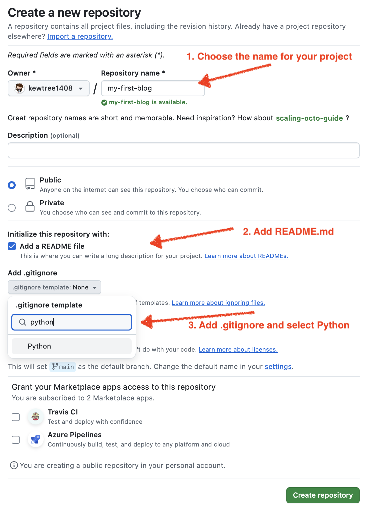
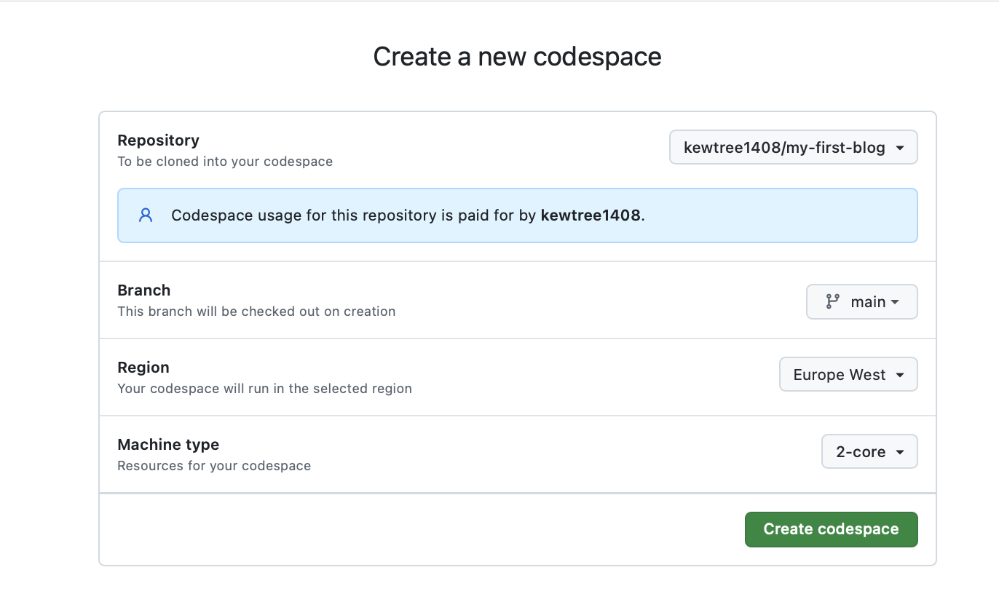
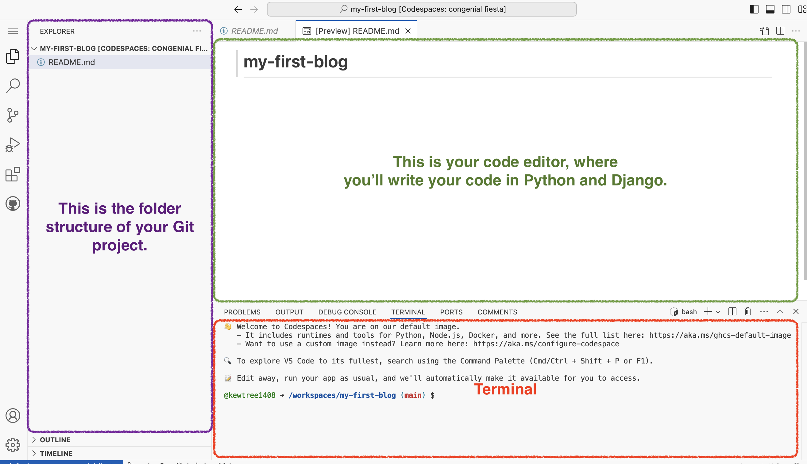
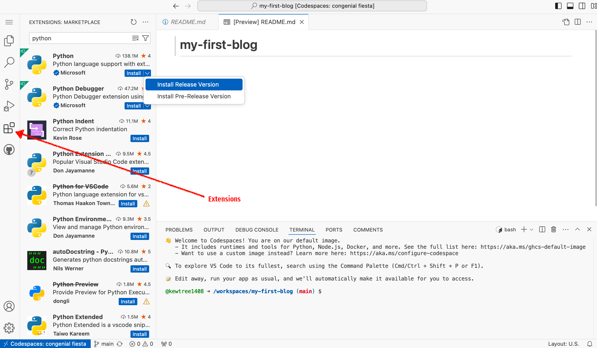

Installation
If you're doing the tutorial at home
If you're doing the tutorial at home, not at one of the Django Girls events , you can completely skip this chapter now and go straight to the How the Internet works chapter.
This is because we cover installing things as they are needed in the tutorial -- this is just an additional page that gathers all of the installation instructions in one place (which is useful for some workshop formats). You can choose to install everything that is on this page right now if you wish. But if you want to start learning things before installing a bunch of stuff on your computer, skip this chapter and we will explain the installation parts to you later on, as they are needed.
Good luck!
If you're attending a workshop
If you are attending one of the Django Girls events :
- Your workshop may have an "installation party" before the main workshop. If you are at an installation party, this page is for you! Follow the instructions here to get everything you need for the workshop installed, with the help of the coaches if needed. Then at the main workshop, you'll be able to skip installation instructions you'll encounter in the main tutorial when you get to them.
- The organizers of your workshop may have asked you to try at home to install everything on your computer before the workshop starts. If you have been asked to do that, this page is for you! Follow the instructions here, as best you can. Then at the main workshop, when you get to an installation step in the main tutorial, if you were not able to get that piece installed you can get help from your coach.
- If your workshop does not have an installation party (or you couldn't attend), and if the organizers didn't ask you to try to install everything before you arrived, skip this page and go straight to the How the Internet works chapter. You'll be installing everything you need as you work through the tutorial.
Installation
In this tutorial you will be building a blog. In order to do that, as you go through the tutorial you'll be instructed on how to install various software on your computer and set up some online accounts as needed (if you are using local desktop environment) or instructed on how to create online accounts only (if you are using cloud development). This page gathers all of the installation and sign-up instructions in one place (which is useful for some workshop formats).
Chromebook Installation
To set up your Chromebook, follow the instructions below:
For people using a Chromebook or those with limited memory on their laptops, we recommend using a cloud IDE environment. This allows you to interact with the command line, Python, and Django directly through your browser, where a code editor is already installed. In case you using this instruction, some steps of the tutorial don't have to be done again ("Deploy/Git" part ). You’ll find a more detailed explanation in the “Deploy/Git” section.
Your installation experience will be a little different.
-
Go to GitHub.com and sign up for a new, free user account. Be sure to remember your password (add it to your password manager, if you use one).
-
Create a GitHub project . Visit this link, use "my-first-blog" name for your project, and make it public (needed for deployment, you can make it private later). Also, add a
README.mdand.gitignorefile.
-
Start a Codespace . Go to GitHub Codespaces and select the repository you just created. Click "Create Codespace".

Wait a little bit and you'll see something like that:

The VSCode editor will open for you automatically. If you see a notification that says "Install Python", please click on it. If not prompted, click the "Extensions" icon on the left sidebar in the Codespace editor. Search for "Python" and click "Install."

The bash terminal (similar to Linux) is at the bottom of the page.
By default, the GitHub Codespace environment will be deleted after 1 month (this applies only to the environment, not your code). To prevent auto-deletion, you can adjust the settings on the page: https://github.com/codespaces

-
Continue with the tutorial . Follow the next steps from the section Set up virtual environment and install Django . Follow than sections for Ubuntu/Linux. Use the Codespaces command line (terminal), accessible through your browser.
macOS, Windows, Linux Installation
If you are not using a Chromebook, your experience will be a little different as you need to download and install some software locally as well as set up online accounts.
To install software on your machine, follow the instructions below:
Brief intro to the command line
Many of the steps below reference the "console", "terminal", "command window", or "command line" -- these all mean the same thing: a window on your computer where you can enter commands. When you get to the main tutorial, you'll learn more about the command line. For now, the main thing you need to know is how to open a command window and what it looks like:
Go to Launchpad → Other → Terminal.
It's probably under Applications → Accessories → Terminal, or Applications → System → Terminal, but that may depend on your system. If it's not there, you can try to Google it. :)
Depending on your version of Windows and your keyboard, one of the following should open a command window (you may have to experiment a bit, but you don't have to try all of these suggestions):
- Go to the Start menu or screen, and enter "Command Prompt" in the search field.
- Go to Start menu → Windows System → Command Prompt.
- Go to Start menu → All Programs → Accessories → Command Prompt.
- Go to the Start screen, hover your mouse in the lower-left corner of the screen, and click the down arrow that appears (on a touch screen, instead flick up from the bottom of the screen). The Apps page should open. Click on Command Prompt in the Windows System section.
- Hold the special Windows key on your keyboard and press the "X" key. Choose "Command Prompt" from the pop-up menu.
- Hold the Windows key and press the "R" key to get a "Run" window. Type "cmd" in the box, and click the OK key.

Later in this tutorial, you will need to have two command windows open at the same time. However, on some versions of Windows, if you already have one command window open and you try to open a second one using the same method, it will instead point you to the command window you already have open. Try it now on your computer and see what happens! If you only get one command window, try one of the other methods in the list above. At least one of them should result in a new command window being opened.
The Command-line Prompt
Now you know how to open a command line, we just need to understand what the "prompt" is.
If you're on Mac or Linux, you probably see a
$
, like this:
command-line
$
On Windows, you probably see a
>
, like this:
command-line
>
Take a look at the Linux section just above now -- you'll see something more like that when you get to PythonAnywhere later in the tutorial.
Each command will be prepended by a
$
or
>
and one space, but you should not type it. Your computer will do it
for you. :)
Just a small note: in your case there may be something like
C:\Users\ola>orOlas-MacBook-Air:~ ola$before the prompt sign, and this is 100% OK.
The part up to and including the
$
or the
>
is called the
command line prompt
, or
prompt
for short. It prompts you to input something there.
In the tutorial, when we want you to type in a command, we will
include the
$
or
>
, and occasionally more to the left. Ignore the left part and only
type in the command, which starts after the prompt.
Install Python
For readers at home: this chapter is covered in the Installing Python & Code Editor video.
This section is based on a tutorial by Geek Girls Carrots ( https://github.com/ggcarrots/django-carrots )
Django is written in Python. We need Python to do anything in Django. Let's start by installing it! We want you to install the latest version of Python 3, so if you have any earlier version, you will need to upgrade it. If you already have version 3.10 or higher you should be fine.
Please install normal Python as follows, even when you have Anaconda installed on your computer.
First check whether your computer is running a 32-bit version or a 64-bit version of Windows, on the "System type" line of the System Info page. To reach this page, try one of these methods:
- Press the Windows key and Pause/Break key at the same time
- Open your Control Panel from the Windows menu, then navigate to System & Security, then System
- Press the Windows button, then navigate to Settings > System > About
-
Search the Windows Start menu for "System Information". To do
that, click the Start button or press the Windows key, then
begin to type
System Information. It will start making suggestions as soon as you type. You can select the entry once it shows up.
You can download Python for Windows from the website https://www.python.org/downloads/windows/ . Click on the "Latest Python 3 Release - Python x.x.x" link. If your computer is running a 64-bit version of Windows, download the Windows x86-64 executable installer . Otherwise, download the Windows x86 executable installer . After downloading the installer, you should run it (double-click on it) and follow the instructions there.
One thing to watch out for: During the installation, you will notice a window marked "Setup". Make sure you tick the "Add Python 3.12 to PATH" or 'Add Python to your environment variables" checkbox and click on "Install Now", as shown here (it may look a bit different if you are installing a different version):

When the installation completes, you may see a dialog box with a link you can follow to learn more about Python or about the version you installed. Close or cancel that dialog -- you'll be learning more in this tutorial!
Note: If you are using an older version of Windows (7, Vista, or any older version) and the Python 3.12 installer fails with an error, then install all Windows Updates and try to install Python again. If you still have the error, try installing Python version 3.10.13 from Python.org .
Django 5.1.2 needs Python 3.10 or greater, which does not support Windows XP or earlier versions.
Note Before you install Python on macOS, you should ensure your Mac settings allow installing packages that aren't from the App Store. Go to System Preferences (it's in the Applications folder), click "Security & Privacy," and then the "General" tab. If your "Allow apps downloaded from:" is set to "Mac App Store," change it to "Mac App Store and identified developers."
You need to go to the website https://www.python.org/downloads/ and download the latest Python installer:
- Download Python 3.12.3,
- Double click python-3.12.3-macos11.pkg to run the installer.
It is very likely that you already have Python installed out of the box. To check if you have it installed (and which version it is), open a console and type the following command:
command-line
$ python3 --version
Python 3.12.3
If you have a different version of Python installed, at least 3.10 (e.g. 3.10.13), then you don't have to upgrade. If you don't have Python installed, or if you want a different version, first check which Linux distribution you are using with the following command:
command-line
$ grep '^NAME=' /etc/os-release
Afterwards, depending on the result, follow one of the following installation guides below this section.
Type this command into your console:
command-line
$ sudo apt install python3
Use this command in your console:
command-line
$ sudo dnf install python3
If you're on older Fedora versions you might get an error that the
command
dnf
is not found. In that case, you need to use
yum
instead.
Use this command in your console:
command-line
$ sudo zypper install python3
Verify the installation was successful by opening a command prompt
and running the
python3
command:
command-line
$ python3 --version
Python 3.12.3
The version shown may be different from 3.12.3 -- it should match the version you installed.
NOTE:
If you're on Windows and you get an error message that
python3
wasn't found, try using
python
(without the
3
) and check if it still might be a version of Python that is 3.10 or
higher. If that doesn't work either, you may open a new command
prompt and try again; this happens if you use a command prompt that
was opened before the Python installation.
If you have any doubts, or if something went wrong and you have no idea what to do next, please ask your coach! Sometimes things don't go smoothly and it's better to ask for help from someone with more experience.
Install a code editor
There are a lot of different editors and it largely boils down to personal preference. Most Python programmers use complex but extremely powerful IDEs (Integrated Development Environments), such as PyCharm. As a beginner, however, that's probably less suitable; our recommendations are equally powerful, but a lot simpler.
Our suggestions are below, but feel free to ask your coach what their preferences are – it'll be easier to get help from them.
Visual Studio Code
Visual Studio Code is a source code editor developed by Microsoft for Windows, Linux and macOS. It includes support for debugging, embedded Git control, syntax highlighting, intelligent code completion, snippets, and code refactoring.
Gedit
Gedit is an open-source, free editor, available for all operating systems.
Sublime Text
Sublime Text is a very popular editor with a free evaluation period and it's available for all operating systems.
Why are we installing a code editor?
You might be wondering why we are installing this special code editor software, rather than using something like Word or Notepad.
The first reason is that code needs to be plain text , and the problem with programs like Word and Textedit is that they don't actually produce plain text, they produce rich text (with fonts and formatting), using custom formats like RTF (Rich Text Format) .
The second reason is that code editors are specialized for editing code, so they can provide helpful features like highlighting code with color according to its meaning, or automatically closing quotes for you.
We'll see all this in action later. Soon, you'll come to think of your trusty old code editor as one of your favorite tools. :)
Set up virtualenv and install Django
Part of this section is based on tutorials by Geek Girls Carrots ( https://github.com/ggcarrots/django-carrots ).
Part of this section is based on the django-marcador tutorial licensed under the Creative Commons Attribution-ShareAlike 4.0 International License. The django-marcador tutorial is copyrighted by Markus Zapke-Gründemann et al.
Virtual environment
Before we install Django we will get you to install an extremely useful tool to help keep your coding environment tidy on your computer. It's possible to skip this step, but it's highly recommended to follow it. Starting with the best possible setup will save you a lot of trouble in the future!
So, let's create a virtual environment (also called a virtualenv ). Virtualenv will isolate your Python/Django setup on a per-project basis. This means that any changes you make to one website won't affect any others you're also developing. Neat, right?
All you need to do is find a directory in which you want to create
the
virtualenv
; your home directory, for example. On Windows, it might look like
C:\Users\Name\
(where
Name
is the name of your login).
NOTE: On Windows, make sure that this directory does not contain accented or special characters; if your username contains accented characters, use a different directory, for example,
C:\djangogirls.
For this tutorial we will be using a new directory
djangogirls
from your home directory:
command-line
$ mkdir djangogirls
$ cd djangogirls
We will make a virtualenv called
myvenv
. The general command will be in the format:
command-line
$ python3 -m venv myvenv
To create a new
virtualenv
, you need to open the command prompt and run
python -m venv myvenv
. It will look like this:
command-line
C:\Users\Name\djangogirls> python -m venv myvenv
Where
myvenv
is the name of your
virtualenv
. You can use any other name, but stick to lowercase and use no
spaces, accents or special characters. It is also a good idea to
keep the name short – you'll be referencing it a lot!
We can create a
virtualenv
on both Linux and macOS by running
python3 -m venv myvenv
. It will look like this:
command-line
$ python3 -m venv myvenv
myvenv
is the name of your
virtualenv
. You can use any other name, but stick to lowercase and use no
spaces. It is also a good idea to keep the name short as you'll be
referencing it a lot!
NOTE: On some versions of Debian/Ubuntu you may receive the following error:
command-line
The virtual environment was not created successfully because ensurepip is not available. On Debian/Ubuntu systems, you need to install the python3-venv package using the following command. apt install python3-venv You may need to use sudo with that command. After installing the python3-venv package, recreate your virtual environment.In this case, follow the instructions above and install the
python3-venvpackage:command-line
$ sudo apt install python3-venvNOTE: On some versions of Debian/Ubuntu initiating the virtual environment like this currently gives the following error:
command-line
Error: Command '['/home/eddie/Slask/tmp/venv/bin/python3', '-Im', 'ensurepip', '--upgrade', '--default-pip']' returned non-zero exit status 1To get around this, use the
virtualenvcommand instead.command-line
$ sudo apt install python-virtualenv $ virtualenv --python=python3.12 myvenvNOTE: If you get an error like
command-line
E: Unable to locate package python3-venvthen instead run:
command-line
sudo apt install python3.12-venv
Working with virtualenv
The command above will create a directory called
myvenv
(or whatever name you chose) that contains our virtual environment
(basically a bunch of directories and files).
Start your virtual environment by running:
command-line
C:\Users\Name\djangogirls> myvenv\Scripts\activate
NOTE: On Windows 10 you might get an error in the Windows PowerShell that says
execution of scripts is disabled on this system. In this case, open another Windows PowerShell with the "Run as Administrator" option. Then try typing the following command before starting your virtual environment:command-line
C:\WINDOWS\system32> Set-ExecutionPolicy -ExecutionPolicy RemoteSigned Execution Policy Change The execution policy helps protect you from scripts that you do not trust. Changing the execution policy might expose you to the security risks described in the about_Execution_Policies help topic at https://go.microsoft.com/fwlink/?LinkID=135170. Do you want to change the execution policy? [Y] Yes [A] Yes to All [N] No [L] No to All [S] Suspend [?] Help (default is "N"): A
NOTE: For users of the popular editor VS Code, which comes with an integrated terminal based off windows PowerShell, if you wish to stick with the integrated terminal, you may run the following command to activate your virtual environment:
$ . myvenv\Scripts\activate.ps1The advantage is that you don't have to switch between editor windows and command-line windows
Start your virtual environment by running:
command-line
$ source myvenv/bin/activate
Remember to replace
myvenv
with your chosen
virtualenv
name!
NOTE: If the command
sourceis not available, try doing this instead:command-line
$ . myvenv/bin/activate
You will know that you have
virtualenv
started when you see that the prompt in your console is prefixed
with
(myvenv)
.
When working within a virtual environment,
python
will automatically refer to the correct version so you can use
python
instead of
python3
.
OK, we have all important dependencies in place. We can finally install Django!
Installing Django
Now that you have your
virtualenv
started, you can install Django.
Before we do that, we should make sure we have the latest version of
pip
, the software that we use to install Django:
command-line
(myvenv) ~$ python -m pip install --upgrade pip
Installing packages with requirements
A requirements file keeps a list of dependencies to be installed
using
pip install
:
First create a
requirements.txt
file inside of the
djangogirls/
folder, using the code editor that you installed earlier. You do
this by opening a new file in the code editor and then saving it as
requirements.txt
in the
djangogirls/
folder. Your directory will look like this:
djangogirls
├── myvenv
│ └── ...
└───requirements.txt
In your
djangogirls/requirements.txt
file you should add the following text:
djangogirls/requirements.txt
Django~=5.1.2
Now, run
pip install -r requirements.txt
to install Django.
command-line
(myvenv) ~$ pip install -r requirements.txt
Collecting Django~=5.1.2 (from -r requirements.txt (line 1))
Downloading Django-5.1.2-py3-none-any.whl (7.9MB)
Installing collected packages: Django
Successfully installed Django-5.1.2
If you get an error when calling pip on Windows, please check if your project pathname contains spaces, accents or special characters (for example,
C:\Users\User Name\djangogirls). If it does, please consider using another place without spaces, accents or special characters (suggestion:C:\djangogirls). Create a new virtualenv in the new directory, then delete the old one and try the above command again. (Moving the virtualenv directory won't work since virtualenv uses absolute paths.)
Your command line might freeze when you try to install Django. If this happens, instead of the above command use:
command-line
C:\Users\Name\djangogirls> python -m pip install -r requirements.txt
If you get an error when calling pip on Ubuntu 12.04 please run
python -m pip install -U --force-reinstall pipto fix the pip installation in the virtualenv.
That's it! You're now (finally) ready to create a Django application!
Install Git
Git is a "version control system" used by a lot of programmers. This software can track changes to files over time so that you can recall specific versions later. A bit like the "track changes" feature in word processor programs (e.g., Microsoft Word or LibreOffice Writer), but much more powerful.
Installing Git
You can download Git from git-scm.com . You can hit "next" on all steps except for two: in the step where it asks to choose your editor, you should pick Nano, and in the step entitled "Adjusting your PATH environment", choose "Use Git and optional Unix tools from the Windows Command Prompt" (the bottom option). Other than that, the defaults are fine. Checkout Windows-style, commit Unix-style line endings is good.
Do not forget to restart the command prompt or PowerShell after the installation finished successfully.
Download Git from https://git-scm.com/download/mac and follow the instructions.
Note If you are running OS X 10.6, 10.7, or 10.8, you will need to install the version of git from here: Git installer for OS X Snow Leopard
It is recommended to install using brew (you may need to install homebrew if you don't already have it):
brew install gitPlease note that some Mac M1/M2/M3 users may have the error
zsh: command not found: brew. In that case, please follow this or this to fix the error.
command-line
$ sudo apt install git
command-line
$ sudo dnf install git
command-line
$ sudo zypper install git
Create a GitHub account
Go to GitHub.com and sign up for a new, free user account. Be sure to remember your password (add it to your password manager, if you use one).
Create a PythonAnywhere account
PythonAnywhere is a service for running Python code on servers "in the cloud". We'll use it for hosting our site, live and on the Internet.
We will be hosting the blog we're building on PythonAnywhere. Sign up for a "Beginner" account on PythonAnywhere (the free tier is fine, you don't need a credit card).

Note When choosing your username here, bear in mind that your blog's URL will take the form
yourusername.pythonanywhere.com, so choose either your own nickname or a name for what your blog is all about. Also, be sure to remember your password (add it to your password manager, if you use one).
Creating a PythonAnywhere API token
This is something you only need to do once. When you've signed up for PythonAnywhere, you'll be taken to your dashboard. Find the link near the top right to your "Account" page:

then select the tab named "API token", and hit the button that says "Create new API token".

Start reading
Congratulations, you are all set up and ready to go! If you still have some time before the workshop, it would be useful to start reading a few of the beginning chapters:
Enjoy the workshop!
When you begin the workshop, you'll be able to go straight to Your first Django project! because you already covered the material in the earlier chapters.
Coach quiz for this chapter
Loading chapter quiz...